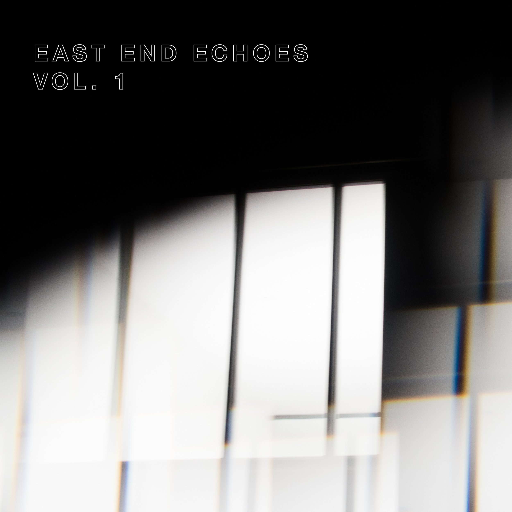

J.E. HERNÁNDEZ
Composer and cinematographer J.E. Hernández crafts evocative works that weave personal and cultural narratives across traditional and multidisciplinary mediums. Rooted in mathematical, philosophical, and historical processes, his music reflects his heritage from Tabasco and Houston.

east end echoes vol. 1
East End Echoes merges interviews from Houston’s Historic East End with layered musical fragments, forming an evolving sonic collage that captures the neighborhood’s living memory. Created by composer J.E. Hernández as a permanent soundwalk, this release lets listeners immerse themselves in shifting textures and local voices wherever they are. Visit eastendechoes.com to learn more.